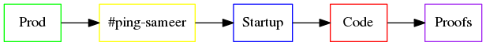

Sidenotes
I use this shell account, to telnet my c64 , so that it's part of the internet.
What? I need such gateway drugs ! The other day I saw someone getting a bitcoin addr on TI-89 &
that, not all the ype, got me in to blockchains and eventually p2p servingserving
this content without a server ....
I d often think why do I need a server for others to access my file tree (no matter how holistic), in a user friendly way
Then, off course, I write here in my attempts to
Write monographs, as I am not qualified to publish research
Using the information I have about some phenomenon of my interest, to Identify a system withoin it or prove that it is random or independent
Pinpoint 2-3 key ideas of the
Activities which span[ned] in range of n years of my time
n=10
Consuming from computer, as if it is a fridge and Flags of Nations
Slumming it
n=5
Writing on Quora.
Trouble in learning new and old things
n=2
Teaching Physics in Prep classes : Abomination
Bash scripting and random automations
Non OS programming
Emacs-nox and shell-acoount as my sole client & server for nearly anything I do on OS
n=1
Living at IITB as a UG
n <1
Bashing the pomp in the jobs and markets of other people
So what are hooks again
Grammar & Pronunciation
Calculator routines
Misc. Thoughts
Using Music principles to improve writing
Cool ideas in other languages , nix and calculus
Socialist ideas in programming and math